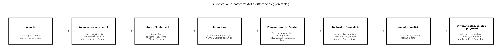
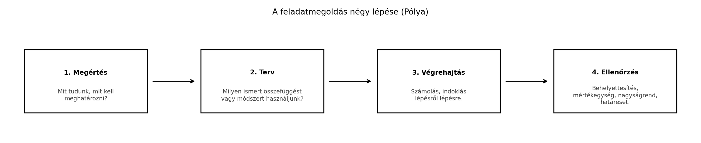

A könyv célja, hogy a kalkulust és az analízist ne mint szabályok gyűjteményét mutassa be, hanem mint olyan eszköztárat, amely valós kérdésekre ad pontos választ. Ez az útmutató rögzíti, milyen ív mentén halad a könyv, milyen előismereteket vár el, és hogyan érdemes dolgozni az egyes alfejezetekkel.
A mindennapi tapasztalat tele van változással: egy autó gyorsul, egy gyógyszer kiürül a szervezetből, a hő szétterjed egy fémrúdban, egy ingadozó áram feszültsége periodikusan változik. Az iskolai algebra jól leír állandó sebességet, egyenes vonalú egyenletes mozgást vagy lineáris összefüggéseket, de a pillanatnyi sebesség, a görbe alatti terület vagy egy inga mozgása már új fogalmakat igényel.
A kalkulus és az analízis az a matematikai nyelv, amely ezeket a kérdéseket pontosan kezeli. Vezérkérdései:
Ezek nem egymástól független témák. A könyv egyetlen ív mentén rendezi őket: először a határérték fogalmát építi fel, mert erre épül a derivált, az integrál, a sorfejtés, a többváltozós analízis és végül a differenciálegyenletek elmélete.
A tizenegy rész a következő láncot alkotja (az ábra a tizenegy részt nyolc lépésbe vonja össze; a lépések alatt a római számú részek állnak):

A lánc lényege: az I. részben a sorozatok és a határérték adják azt a precíz nyelvet, amelyen a későbbi fogalmak megfogalmazhatók. A II. részben a komplex számok és a végtelen sorok már ezt a nyelvet használják. A III. részben megjelenik a függvények határértéke és folytonossága; ez közvetlenül kell ahhoz, hogy a deriváltat egy érintő meredekségeként definiálhassuk. A deriválásból nő ki a függvényvizsgálat, az optimalizálás és a Taylor-közelítés. Az integrálás a területproblémából indul, és a primitív függvény, a Riemann-integrál, majd az improprius és numerikus integrálás fokozatain át jut el az alkalmazásokig. A függvénysorozatok és hatványsorok teszik lehetővé, hogy függvényeket „végtelen polinomként” kezeljünk, a Fourier-sorok pedig a periodikus jeleket bontják fel egyszerű rezgésekre. A többváltozós analízis kiterjeszti a deriválást és az integrálást a térre, a vektoranalízis pedig összeköti a vonal-, felület- és térfogati integrálokat. A komplex analízis a komplex síkon értelmezi újra a deriválást és az integrálást, és olyan eszközöket ad, amelyekkel valós integrálok is elegánsan kiszámíthatók. Végül a differenciálegyenletek mindezt a változás leírására használják fel.
A könyv nulláról építi fel az analízist, ezért analízisből nem vár el előismeretet. Ugyanakkor feltételezi a következő iskolai anyag biztos használatát:
A Python-illusztrációk olvasásához elegendő, ha az olvasó egyszerű kódot értelmezni tud; a szükséges eszközöket a Python-labor: NumPy, matplotlib és SymPy a kalkulushoz alfejezet mutatja be.
A könyv minden alfejezete ugyanazt a tanítási szerkezetet követi, hogy az önálló tanulás kiszámítható legyen:
A kiemelések szerepe rögzített: Definíció., Tétel., Lemma., Állítás., Következmény., Bizonyítás., Megjegyzés., Példa., Ellenpélda., Alkalmazás., Figyelem. Mindegyik arra hívja fel a figyelmet, hogy az adott szakasz milyen szerepet tölt be a megértésben.
A könyv koherensen építkezik: egy korábban kimondott tételt később konkrétan felhasznál. Ezért minden alfejezetben szerepel egy Továbbvitt eredmény bekezdés, amely pontosan megmondja, hogy az adott eredményt melyik későbbi alfejezetben használjuk. Ez a bekezdés nem dísz: azt jelzi, hogy az adott fogalom nem elszigetelt, hanem eszköz lesz a kezedben.
A tanulás során érdemes saját tétel- és képletgyűjteményt vezetni. Ebbe minden alfejezet végén írd be:
Ezt a naplót használhatod később a A kalkulus fogalmi térképe: összefoglalás és képletgyűjtemény-használat alfejezetben is, amikor a teljes anyagot áttekinted.
A könyv egységes jelölésrendszert használ, hogy a képletek mindenütt ugyanazt jelentsék. A legfontosabb alapelvek:
A teljes jelölés- és képletjegyzéket a könyv végén, a Képlet- és jelölésgyűjtemény függelékben találod; a magyar–angol szakszavakat a Fogalomtár (magyar–angol), a fejezetek közötti függéseket a Kompetenciatérkép és tanulási útvonal függelék gyűjti. Minden alfejezet ezt a jelölést követi.
A következő két példa azt mutatja, milyen stílusú számolásokkal találkozol a könyvben. Az első a sorozatok határértékét, a második a függvényhatárértéket készíti elő.
1. példa (A). Számítsuk ki az
sorozat határértékét, ahogy a Sorozatok: megadás, korlátosság, monotonitás, modellek és a A sorozat határértéke: az ε-N definíció alfejezetekben fogjuk tenni.
Osszuk el a számlálót és a nevezőt is a nevező legnagyobb kitevőjű tagjával, -nel:
Mivel és , a számláló -hoz, a nevező -höz tart, ezért
Ellenőrzés: -ra , ami már közel van az -höz.
2. példa (B). Számítsuk ki a
határértéket, ahogy a A függvény határértéke: Heine- és Cauchy-féle definíció alfejezetben fogjuk eljárni.
Közvetlen behelyettesítéssel alakot kapnánk, ami nem ad választ. Vegyük észre, hogy a számláló szorzattá alakítható:
Ha , akkor egyszerűsíthetünk:
A határértékben közelít -höz, de nem egyenlő -vel, ezért az egyszerűsítés megengedett. Így
Ez a példa mutatja, miért fontos megkülönböztetni a határértéket a függvényértéktől.
A könyv gyakorlatias elvének illusztrálására nézzünk egy egyszerű modellt, amely a későbbi fejezetekben pontosabbá válik. Egy autó megállási távolsága két részből áll: a reakcióidő alatt megtett útból és a fékezési útból. Legyen a sebesség m/s-ban, a reakcióidő átlagosan s, a fékezési lassulás olyan, hogy a fékút közelítőleg méter. Ekkor a megállási távolság közelítő modellje:
Számítsuk ki a megállási távolságot km/h sebességnél. Először átváltjuk a sebességet:
Behelyettesítünk:
Tehát a modell szerint km/h-nál a megállási távolság körülbelül méter. A fékútképlettel összevetve ez lassulást jelent, ami száraz úton, jó gumival és ABS-szel is a felső határ; a s is kedvező reakcióidő. Óvatosabb modellértékekkel (, s) a megállási út kb. m, ezért a m optimista becslés. Az eredmény nagyságrendileg reális, ugyanakkor a modell korlátos: nem veszi figyelembe az út nedvességét, a gumiabroncs állapotát, a lejtőt, a reakcióidő szórását és a tényleges lassulás időbeli lefutását. A könyv későbbi alfejezeteiben az ilyen modelleket deriválással és integrálással finomítjuk.
A definíciók átugrása. Gyakori hiba, hogy valaki csak a számolási receptet keresi, és nem érti meg a definíciót. Ez később megbosszulja magát, például amikor az egyenletes konvergencia és a pontonkénti konvergencia különbségét kell megérteni. A helyes gondolat: a definíció a fogalom pontos jelentése, a recept csak annak következménye.
A jelölések pontatlan másolása. A helyett , a tizedesvessző helyett tizedespont használata nem csak esztétikai kérdés: a könyv egységes jelölésrendszere biztosítja, hogy a képletek egyértelműek legyenek. A helyes gondolat: mindig a könyv jelölését használd, a saját naplódban is.
A Továbbvitt eredmények figyelmen kívül hagyása. Ha nem tudod, hogy egy tételt később hol használunk, könnyen úgy érzed, hogy a tananyag részei függetlenek egymástól. A helyes gondolat: minden továbbvitt eredménynél gondold át, milyen problémában fog visszaköszönni az adott fogalom.
1. feladat (A). Sorold fel a könyv tizenegy részét, és mindegyikhez rendelj egy-egy kulcsszót.
2. feladat (A). Melyik jelölés helyes a könyvben: vagy ? Mi a természetes logaritmus jele?
3. feladat (B). Magyarázd el, miért fontos, hogy a kidolgozott példákat először önállóan oldd meg, mielőtt megnézed a megoldást.
4. feladat (B). Egy barátod azt mondja, hogy a könyvben a tizedesjel pont, mert a Python kódban pont van. Helyes-e az állítás? Indokold.
5. feladat (C). A könyv a határértéket a következő laza gondolattal vezeti be: „ közel van -hoz, ha elég nagy.” Fogalmazd meg, mi hiányzik ebből a mondatból ahhoz, hogy pontos definíció legyen, és utalj arra, melyik alfejezet fogja ezt pótolni.
6. feladat (D). Válassz egy valós problémát, például a gyógyszerszint változását vagy a hűlő kávé hőmérsékletét. Írd le, a könyv mely részeiben találkozhatsz vele, és milyen eszközöket használhatsz a megoldásához.
1. feladat. A tizenegy rész és kulcsszavai: I. Alapok – sorozatok, teljesség; II. Komplex számok és sorok – konvergenciakritériumok; III. Határérték, folytonosság – ε-δ, Bolzano; IV. Differenciálszámítás – derivált, Taylor; V. Integrálszámítás – Riemann, Newton–Leibniz; VI. Függvénysorok, Fourier – egyenletes konvergencia; VII. Többváltozós analízis – gradiens, szélsőérték; VIII. Többes integrál, vektoranalízis – Green, Gauss, Stokes; IX. Komplex analízis – Cauchy, reziduum; X. Differenciálegyenletek – modellezés, Laplace; XI. Záróprojektek – alkalmazások.
2. feladat. A könyvben a magyar jelölés a helyes, a a nemzetközi (és Python-) változat. A természetes logaritmus jele .
3. feladat. Ha valaki rögtön megnézi a megoldást, az agya felismeri a lépéseket, de nem gyakorolja az önálló problémamegoldást. Az önálló próbálkozás során derül ki, melyik lépés nem világos; így a megoldás olvasása célzottan javítja a hiányosságot, és rögzíti a módszert.
4. feladat. A barát állítása nem helyes. A könyv prózában és képletekben tizedesvesszőt használ, például . A Python kódban valóban tizedespont szerepel, mert a Python ezt írja elő, de a kódok szemléltető eszközök, nem helyettesítik a matematikai szöveg jelöléseit.
5. feladat. A laza mondatban a „közel” és az „elég nagy” kifejezések nem számszerűek. A pontos definíció (a A sorozat határértéke: az ε-N definíció alfejezetben) megadja, hogy minden hibakorláthoz létezik olyan küszöbindex, hogy esetén . Így a „közel” tetszőlegesen kicsi hibát, az „elég nagy” pedig konkrétan választható küszöböt jelent.
6. feladat (D). Például a gyógyszerszint: először az Exponenciális és logaritmusfüggvény: növekedés, bomlás, kamat alfejezetben exponenciális kiürülésként, majd a Rekurzív sorozatok, fixpont-iteráció és a konvergencia sebessége alfejezetben napi adagolású rekurzív sorozatként jelenik meg, végül a Modellezés differenciálegyenletekkel alfejezetben folytonos kiürülési modellként differenciálegyenletet kapunk. (A diszkrét és a folytonos modell kapcsolata a feladat tárgya.) A megoldáshoz szétválasztható változójú egyenletet használunk a Szétválasztható változójú egyenletek alfejezetben, a numerikus közelítést pedig a Numerikus megoldás: Euler- és Runge–Kutta-módszer alfejezetben. Így ugyanaz a valós probléma a könyv több szintjén is visszatér.
A könyv a kalkulust és az analízist valós kérdésekből kiindulva, a határérték fogalmára építve tanítja. Szerkezete tizenegy részre tagolódik: az alapoktól a sorozatokon, komplex számokon, függvényhatárértéken, deriváláson, integráláson, függvénysorokon és Fourier-sorokon át a többváltozós analízisig, a vektoranalízisig, a komplex analízisig és a differenciálegyenletekig. Minden alfejezet azonos felépítésű: motiváció, szemléletes kép, definíciók, kidolgozott példák, tételek bizonyítással, számolási recept, valós alkalmazás, tipikus hibák, önellenőrzés, feladatok, megoldások és rövid összefoglaló. A Továbbvitt eredmény bekezdések mutatják meg, hogy egy-egy fogalmat mely későbbi alfejezet használ fel. A könyv egységes jelöléseket alkalmaz: tizedesvessző, , magyar trigonometrikus jelek (, , , ), radián, félkövér vektorok. A tanulást a saját tételgyűjtemény-napló vezetése teszi hatékonnyá, amelyet a A kalkulus fogalmi térképe: összefoglalás és képletgyűjtemény-használat alfejezet hasznosít.
Az előző alfejezetben (A könyv használata: cél, felépítés, olvasási mód) áttekintettük, hogyan épül fel a könyv, és milyen módon érdemes haladni benne. Ebben az alfejezetben konkrét útvonalakat, ütemezést és önellenőrzési eszközt adunk: először egy rövid belépő teszttel felmérjük a kiindulási szintet, majd négy célzott tanulási útvonalat mutatunk be. Végül definiáljuk a továbblépési szabályt, amely az egyes alfejezetek végén található önellenőrző kérdésekhez kapcsolódik.
A teszt nem osztályoz, hanem diagnosztizálja az alapszintet. Minden kérdés a A könyv használata: cél, felépítés, olvasási mód alfejezet Előismeretek pontjában felsorolt középiskolai anyagra épül. Válaszolj a kérdésekre önállóan, számológép nélkül, körülbelül 20 perc alatt.
1. Számítsd ki: .
2. Egyszerűsítsd: .
3. Oldd meg: .
4. Oldd meg: .
5. Milyen transzformációval kapható meg az grafikonja az grafikonjából?
6. Mennyi a értéke?
7. Írd fel a ponton átmenő, meredekségű egyenes egyenletét.
8. Mennyi a értéke?
9. Fejtsd ki: .
10. Oldd meg: .
11. Mennyi a értéke?
12. Egyszerűsítsd: , ha .
1.
(közös nevező: 20).
2.
.
3.
.
4.
vagy
.
5. A grafikon
egységgel lefelé tolódik.
6.
.
7.
,
azaz
.
8.
.
9.
.
10.
vagy
.
11.
.
12.
(a
kikötés miatt).
0–7 helyes válasz: kezdd a könyvet az I. rész elején. A A valós számok: műveletek, rendezés, abszolút érték, egyenlőtlenségek alfejezet és a Függvények és elemi függvények fejezet alfejezetei segítenek pótolni a hiányzó algebrai és függvénytani alapokat; ezek nélkül a későbbi fejezetekben visszatérő hibákkal találkoznál.
8–10 helyes válasz: az I. részt gyorsabban is feldolgozhatod, de ne ugorj át teljesen. A hibás kérdésekhez tartozó témáknál állj meg: ha például az abszolút értékes egyenlet nem ment, nézd át a A valós számok: műveletek, rendezés, abszolút érték, egyenlőtlenségek alfejezetet; ha a függvénytranszformációval volt gond, a A függvényfogalom: grafikon, kompozíció, inverz alfejezetet. Ezután az Állítások, kvantorok és halmazok, a Szuprémum, infimum és a teljességi axióma és a Teljes indukció, binomiális tétel és nevezetes egyenlőtlenségek alfejezeteket mindenképp dolgozd fel (legalább az önellenőrzésüket oldd meg): ezek nem középiskolai anyagok, a teszt nem méri őket, a sorozatfejezetek mégis közvetlenül használják őket. Ezek után a Sorozatok: megadás, korlátosság, monotonitás, modellek alfejezettől folytathatod.
11–12 helyes válasz: az előismereteid rendben vannak. Az I. részből a kvantorokról, a szuprémumról és az indukcióról szóló Állítások, kvantorok és halmazok, Szuprémum, infimum és a teljességi axióma és Teljes indukció, binomiális tétel és nevezetes egyenlőtlenségek alfejezeteket akkor is dolgozd fel (legalább az önellenőrzésüket oldd meg), ha a teszted hibátlan: ezek nem középiskolai anyagok, a teszt nem méri őket. Utána a sorozatokkal foglalkozó Sorozatok és határértékük és A konvergencia mélyebb eszközei fejezeteket dolgozd fel alaposan, mert a határérték-fogalom itt alakul ki, és erre épül az egész analízis. A függvényekről szóló Függvények és elemi függvények fejezetet gyorsan átnézheted.
Ugyanazt a törzsanyagot négyféleképpen járhatod végig, attól függően, mi a célod. Az alábbi ábra a négy, egymás mellett választható útvonal hangsúlyait mutatja; az útvonalak nem egymás után következnek.
Mindegyik útvonal ugyanazt a törzsanyagot fedi le; csak a hangsúlyok és az elmélyülés mértéke eltér.
1. Teljes kurzus (I–XI. rész). Ez az alapértelmezett útvonal: minden alfejezetet feldolgozol, az A-tól D-ig terjedő feladatokkal együtt. Akkor válaszd, ha az analízist az négyféléves egyetemi analíziskurzus (Analízis I–IV.) mélységében akarod elsajátítani, és van heti 6–8 órád. A bizonyításokat itt is megérted, de a C szintű elméleti feladatokat csak akkor oldod meg, ha a gondolkodás fejlesztése a cél.
2. Mérnöki gyors út. A mérnöki, informatikai vagy gazdasági alkalmazásokra koncentráló útvonalon az A és B feladatok a fő vonal. A C szintű, tisztán elméleti bizonyítási feladatok egy részét átugorhatod, a D szintű modellezési feladatokat viszont mindenképp csináld meg. A bizonyításokat olvasd el, de nem kell minden ε-os lépést fejből reprodukálnod; a számolási recepteket és az alkalmazási példákat viszont tudd önállóan végigszámolni. Különösen fontosak: Függvényvizsgálat és optimalizálás, Improprius és numerikus integrálás, Divergencia, rotáció és a Green-tétel és Felületi integrál és integráltételek (vektoranalízis), A reziduum-tétel és alkalmazásai, valamint Differenciálegyenletek és modellezés–Transzformációs módszerek és kitekintés (differenciálegyenletek).
3. Fizikus út. Ha a cél a fizikai modellezés, a vektoranalízis és a differenciálegyenletek kapnak kiemelt hangsúlyt. Ezen az útvonalon a VIII. rész (Kettős integrál–Felületi integrál és integráltételek; többes integrál és vektoranalízis) és a X. rész (Differenciálegyenletek és modellezés–Transzformációs módszerek és kitekintés) alfejezeteit lassabban, az összes D feladattal együtt dolgozod fel. A Fourier-sorok és a komplex analízis (IX. rész) is hangsúlyos, mert a hullámok és rezgések leírásában nélkülözhetetlenek. A C feladatok közül a fizikai szemléletet segítő bizonyítások fontosak; a tisztán absztrakt bizonyítások elhagyhatók.
4. Matematikai alapozó út. Ez a leglassabb, de legmélyebb útvonal: minden bizonyítást lépésről lépésre feldolgozol, és minden C szintű feladatot megoldasz. A cél nemcsak a tétel kimondása, hanem a bizonyítási technikák elsajátítása is: ε-δ érvelés, rendőrelv, teljességi axióma használata, felosztás finomítása, kompaktsági érvelések. Ez az útvonal azoknak ajánlott, akik matematika, fizika vagy elméleti informatika szakra készülnek, vagy akiknek a későbbi tanulmányaikban valós analízisből kell vizsgázniuk.
A teljes anyag nagyjából 30–40 hét alatt feldolgozható, heti 4–6 alfejezettel. Ez heti 5–8 órát jelent, attól függően, mennyi feladatot oldasz meg. Az alábbi táblázat irányadó; a pontos beosztást a saját idődhöz és útvonaladhoz igazítsd.
| Rész | Témakör | Javasolt időtartam |
|---|---|---|
| I. rész | Alapok: logika, számok, függvények, sorozatok | 4 hét |
| II. rész | Komplex számok és végtelen sorok | 2 hét |
| III. rész | Függvényhatárérték és folytonosság | 2 hét |
| IV. rész | Differenciálszámítás | 5 hét |
| V. rész | Integrálszámítás | 5 hét |
| VI. rész | Függvénysorozatok, hatványsorok, Fourier-sorok | 3 hét |
| VII. rész | Többváltozós differenciálszámítás | 4 hét |
| VIII. rész | Többes integrál és vektoranalízis | 5 hét |
| IX. rész | Komplex analízis | 4 hét |
| X. rész | Differenciálegyenletek | 4 hét |
| XI. rész | Záróprojektek és vizsgafelkészítés | 2 hét |
Ismétlési pontok: minden rész végén iktass be fél–egy napos ismétlést. Nézd át a rész elején lévő fejezetek rövid összefoglalóit, és oldd meg újra azokat az önellenőrző kérdéseket, amelyek korábban hibásak voltak. A XI. részben szereplő két vizsgafeladatsor előtt különösen hasznos egy-két hét ismétlés.
Minden alfejezet végén találsz egy ### Önellenőrzés
részt 4–6 rövid kérdéssel. A kérdések igaz/hamis indoklással, gyors
számolással vagy fogalmi magyarázattal oldhatók meg. A válaszok a
### Megoldások rész elején, „Önellenőrzés – válaszok” alcím
alatt vannak.
Definíció. (Továbblépési szabály az önellenőrzéshez) Ha egy alfejezet végén az önellenőrző kérdések legalább 80%-ára helyesen és indoklással válaszolsz, továbbléphetsz a következő alfejezetre. Ellenkező esetben térj vissza a hibás kérdéshez tartozó, kereszthivatkozással megjelölt alfejezetre, dolgozd fel újra, majd próbáld meg ismét az adott önellenőrző kérdést.
Mivel az önellenőrzés 4–6 kérdésből áll, ez a gyakorlatban 4 kérdésnél 4/4, 5 kérdésnél 4/5, 6 kérdésnél 5/6 helyes választ jelent. A 80%-os küszöb nem önkényes: ha öt kérdésből kettőt elrontasz, az azt jelenti, hogy a fogalom egy lényeges része még nem stabil. Ilyenkor továbbhaladni hibát hibára halmozna. A visszalépés nem kudarc, hanem a tanulási ciklus természetes része.
A könyv minden alfejezetében a feladatok négy szinten jelennek meg:
A feladatok megoldását soha ne olvasd el, mielőtt önállóan, legalább 20–30 percig próbálkoztál volna. A megoldások úgy vannak megírva, hogy a gondolatmenetet is mutatják; ha túl korán megnézed őket, a saját hibáidból való tanulás lehetőségét veszíted el.
A tanulási folyamat során három nagy mérföldkő van:
Az alfejezetvégi összefoglalók. Minden alfejezet „Rövid összefoglaló”-val zárul, amely a továbbvitt eredményeket is tartalmazza. Mielőtt új részt kezdesz, nézd át a rész alfejezeteinek összefoglalóit, és győződj meg róla, hogy a fontos tételeket, képleteket pontosan ki tudod mondani.
A Vegyes vizsgafeladatsor I.: egyváltozós analízis. Ez a feladatsor az I–VI. rész anyagát fedi le: sorozatok, sorok, függvényhatárérték, folytonosság, differenciál- és integrálszámítás, hatványsorok, Fourier-sorok. Akkor érdemes megoldani, amikor a VI. részt befejezted.
A Vegyes vizsgafeladatsor II.: többváltozós, komplex analízis és differenciálegyenletek. Ez a VII–X. rész anyagát fedi le. A XI. részben, a vizsgafelkészítés során használhatod próbavizsgaként.
Ezek a mérföldkő-feladatsorok a A kalkulus fogalmi térképe: összefoglalás és képletgyűjtemény-használat alfejezettel együtt adják a teljes vizsgafelkészítő csomagot.
Továbbvitt eredmény. Az itt bemutatott négy útvonal, a továbblépési szabály és a mérföldkövek a A kalkulus fogalmi térképe: összefoglalás és képletgyűjtemény-használat, a Vegyes vizsgafeladatsor I.: egyváltozós analízis és a Vegyes vizsgafeladatsor II.: többváltozós, komplex analízis és differenciálegyenletek alfejezetekben hasznosulnak.
A tanulási terv készítése hasonló ahhoz, ahogyan egy mérnök egy projekt ütemezését felépíti: a cél(ok) meghatározása, a jelenlegi állapot felmérése, a kritikus út kijelölése, és rendszeres önellenőrző pontok beiktatása. A továbblépési küszöb (80%) is minőségbiztosítási logikát követ: egy hidat sem akkor ellenőriznek először, amikor már átment rajta a forgalom, hanem az építés minden fázisában. Ugyanígy az analízisben sem engedhetjük meg, hogy egy bizonytalan határérték-fogalomra épüljön a deriválás, majd az integrálás. Ez a fajta önellenőrző tanulás a szakmai gyakorlatban is hasznos szokás.
1. A megoldás azonnali megnézése. Ha egy feladaton elakadsz, ne lapozz rögtön a megoldáshoz. Előbb próbáld meg azonosítani, melyik definíció vagy tétel hiányzik, és nézd meg a kapcsolódó alfejezetet. A megoldás csak az önálló próbálkozás után jöjjön.
2. Az önellenőrzés kihagyása. Sokan úgy érzik, hogy „úgyis értik”, és átugorják a fejezetvégi kérdéseket. Ez hamis biztonságérzetet ad. Az önellenőrző kérdések éppen azért rövidek, mert gyorsan jelzik, hol van hiány.
3. A 80%-os küszöb figyelmen kívül hagyása. Ha öt kérdésből három jó (60%), az még nem elég a továbblépéshez: öt kérdésnél legalább négy, hat kérdésnél legalább öt, négy kérdésnél mind a négy válasznak helyesnek kell lennie. A hibás kérdéshez vissza kell térni, különben a hiba a következő fejezetekben összetetté válik.
4. Túl sok alfejezet egy hétre. A heti 4–6 alfejezet irányadó, de a mélyebb bizonyításokkal teli fejezeteknél ez lehet, hogy sok. Ilyenkor inkább csökkentsd a tempót, és a megértésre koncentrálj; a határidő rugalmas, a megértés nem.
1. Mi a továbblépési szabály küszöbe?
2. Sorold fel a négy tanulási útvonalat egy-egy
jellemzővel.
3. Melyik részt hangsúlyozza a fizikus út?
4. Hány alfejezetet javasolt hetente feldolgozni?
5. Mit jelöl az A, B, C, D feladatszint?
6. Melyik két alfejezet adja a
vizsgafeladatsorokat?
1. feladat (A). Végezd el a belépő tesztet, és állapítsd meg a kiindulópontodat a kiértékelés szerint. Írd le, mely alfejezetekkel kezded a tanulást.
2. feladat (A). Válaszd ki a számodra megfelelő tanulási útvonalat, és indokold egy mondatban.
3. feladat (B). Készíts egy heti tervet a kiválasztott útvonal alapján, 4–6 alfejezettel, figyelembe véve a javasolt ütemezést.
4. feladat (B). Válassz ki egy már feldolgozott alfejezetet, és ellenőrizd, teljesíti-e a továbblépési szabályt. Ha nem, határozd meg, melyik korábbi alfejezetre kell visszalépned.
5. feladat (C). Fogalmazd meg, miért fontos az önellenőrző kérdések legalább 80%-os teljesítése a hosszú távú tanulásban. Hivatkozz a továbblépési szabály definíciójára.
6. feladat (D). Tervezd be a két mérföldkő-feladatsort a tanulási naptáradba, és határozd meg, milyen ismétlési pontokat iktatsz be előttük.
Önellenőrzés – válaszok
1. Legalább 80%-os teljesítés, indoklással.
2. Teljes kurzus (I–XI. rész), mérnöki gyors út (A–B
feladatok, C bizonyítások egy része átugorható), fizikus út
(vektoranalízis és differenciálegyenletek hangsúly), matematikai alapozó
út (minden bizonyítás, C feladatok).
3. A VIII. rész (többes integrál és vektoranalízis) és
a X. rész (differenciálegyenletek).
4. Heti 4–6 alfejezetet.
5. A: alap, B: közepes, C: elméleti/bizonyítási, D:
alkalmazási/modellezési.
6. Vegyes vizsgafeladatsor I.:
egyváltozós analízis és Vegyes vizsgafeladatsor
II.: többváltozós, komplex analízis és differenciálegyenletek.
1. feladat megoldása. A kiértékelés egyéni; a lényeg, hogy a hibás témákhoz tartozó alfejezeteket azonosítsd a megoldókulcs segítségével. Például ha a 10. kérdés hibás, a A valós számok: műveletek, rendezés, abszolút érték, egyenlőtlenségek alfejezetet nézd át.
2. feladat megoldása. Az indoklás egyéni; például: „Mérnöki gyors utat választom, mert a gyakorlati modellezés érdekel, és a bizonyítások mélyebb reprodukálására nincs szükségem.”
3. feladat megoldása. A heti terv egyéni; például: 1. hét: A valós számok: műveletek, rendezés, abszolút érték, egyenlőtlenségek, Szuprémum, infimum és a teljességi axióma, Teljes indukció, binomiális tétel és nevezetes egyenlőtlenségek, A függvényfogalom: grafikon, kompozíció, inverz, Hatvány-, polinom- és racionális függvények. Ellenőrizd, hogy a tervben szereplő alfejezetek sorrendje követi a könyv szerkezetét.
4. feladat megoldása. Ha például a A sorozat határértéke: az ε-N definíció alfejezet önellenőrzésénél 5-ből 3 jó, akkor a 80% nem teljesül. A hibás kérdésekhez tartozó fogalmakhoz térj vissza: például az ε-N definícióhoz a A sorozat határértéke: az ε-N definíció alfejezetet nézd át újra, és oldd meg a kapcsolódó A-feladatokat.
5. feladat megoldása. A továbblépési szabály (definíció szerint) legalább 80%-os teljesítést ír elő. Ez azért fontos, mert a matematika fogalmai egymásra épülnek: ha a határérték fogalma nem stabil, akkor a folytonosság, a derivált és az integrál definíciójában is bizonytalan lesz a tanuló. A 80%-os küszöb azt jelzi, hogy a fogalom lényegi része megvan, de ha ennél kevesebb, a hiányosságok továbbgyűrűznek, és a későbbi fejezetekben egyre több hibát okoznak.
6. feladat megoldása. Tervezz be például a VI. rész után egy hetet a Vegyes vizsgafeladatsor I.: egyváltozós analízis előtti ismétlésre, a X. rész után pedig két hetet a Vegyes vizsgafeladatsor II.: többváltozós, komplex analízis és differenciálegyenletek előtti ismétlésre. Az ismétlési pontokon nézd át a részek rövid összefoglalóit, és oldd meg újra a korábban hibás önellenőrző kérdéseket.
Ez az alfejezet a tanulási tervezést és az önellenőrzést tette rendszerbe. A 12 kérdéses belépő teszt alapján eldönthető, hol kezdd a könyvet: 0–7 helyes válasz esetén az I. rész eleje, 8–10 esetén a hiányzó témák pótlása után a sorozatok, 11–12 esetén is a kvantorokról, a szuprémumról és az indukcióról szóló alfejezetek (Állítások, kvantorok és halmazok, Szuprémum, infimum és a teljességi axióma, Teljes indukció, binomiális tétel és nevezetes egyenlőtlenségek) után a sorozatok fejezete a kiindulópont. Négy tanulási útvonalat határoztunk meg: teljes kurzus, mérnöki gyors út, fizikus út, matematikai alapozó út. A javasolt ütemezés heti 4–6 alfejezet, összesen 30–40 hét. Az önellenőrzési továbblépési szabály szerint az önellenőrző kérdések legalább 80%-át kell helyesen és indoklással megválaszolni; ellenkező esetben vissza kell térni a hibás kérdéshez tartozó alfejezetre. A feladatok A (alap), B (közepes), C (elméleti/bizonyítási), D (alkalmazási/modellezési) szintekre oszlanak. A mérföldkő-feladatsorok: Vegyes vizsgafeladatsor I.: egyváltozós analízis, Vegyes vizsgafeladatsor II.: többváltozós, komplex analízis és differenciálegyenletek, a A kalkulus fogalmi térképe: összefoglalás és képletgyűjtemény-használat alfejezettel együtt. Továbbvitt eredmény: az itt definiált útvonalak, a továbblépési szabály és a mérföldkövek a vizsgafelkészítő alfejezetekben hasznosulnak.
Amikor az analízist tanulod, a képletek és számolási eljárások mellett szükséged van két, eleinte kevésbé látványos készségre: tudni kell olvasni egy matematikai állítást, és tudni kell önállóan megoldani egy feladatot. A tankönyv minden alfejezetében találkozni fogsz definíciókkal, tételekkel, bizonyításokkal és példákkal. Ha ezeket passzívan, csak végigolvasod, könnyen kialakul az az érzés, hogy „érted”, a feladatnál mégis megakadsz. Ez az alfejezet megmutatja, hogyan bontsd le a matematikai szöveget, hogyan kövesd a bizonyítások szerkezetét, és hogyan dolgozz a feladatokon egy jól bevált, ellenőrizhető lépéssorral. Ez a módszertan nem külön elmélet: a könyv minden későbbi fejezetében ugyanezt a szerkezetet és gondolkodási rendet fogod használni.
Egy tétel általában három részből áll: a feltétel (amit felteszünk), az állítás (amit bizonyítunk), és a kettő közötti logikai lánc. A feladatmegoldás pedig négy lépésből álló ciklus, amelyet Pólya György nyomán használunk:

Ez a diagram a fejezet egyik legfontosabb üzenetét foglalja össze: a végrehajtás (számolás) csak akkor megbízható, ha megértés és terv előzi meg, illetve ha ellenőrzés zárja.
A matematikai szövegben négy alapvető fogalommal találkozol.
Definíció. A definíció pontosan rögzíti egy fogalom jelentését. Például: „Az egész szám páros, ha létezik olyan egész szám, hogy .” A definíció nem igazolható vagy cáfolható; ez egy megállapodás, amelyhez a továbbiakban ragaszkodunk.
Tétel. A tétel olyan fontos állítás, amelyet bizonyítunk. A tételnek általában van feltétele (előfeltevései) és állítása (következménye). Például a Pitagorasz-tétel egyik egyszerű alakja:
Tétel (Pitagorasz-tétel, síkháromszögre). Ha egy háromszög derékszögű, és befogói és , átfogója , akkor .
Itt a feltétel: a háromszög derékszögű, befogói , , átfogója . Az állítás: .
Lemma. A lemma segédtétel: olyan állítás, amelyet egy nagyobb tétel bizonyításának egyik lépéseként használunk. A lemma önmagában is bizonyítandó, de általában nem a fő cél.
Következmény. A következmény olyan állítás, amely egy tételből közvetlenül, rövid érveléssel adódik. Például a Pitagorasz-tételből következik, hogy ha , akkor .
A feltételek és az állítások viszonyában két irányt különböztetünk meg.
Definíció (szükséges és elégséges feltétel). Legyen
és
két állítás.
-
elégséges feltétele
-nek,
ha
(ha
igaz, akkor
is igaz).
-
szükséges feltétele
-nek,
ha
(ha
igaz, akkor
is igaz).
- Ha mindkettő teljesül, azaz
,
akkor
szükséges és elégséges feltétele
-nek
(avagy ekvivalens vele).
Példa. „Az természetes szám osztható 10-zel” elégséges, de nem szükséges feltétele annak, hogy osztható legyen 2-vel: minden 10-zel osztható szám páros, de nem minden páros szám osztható 10-zel (például ). Viszont „ osztható 2-vel” szükséges feltétele annak, hogy osztható legyen 10-zel: ha , akkor .
Megfordítás, tagadás, kontrapozíció. A „ha , akkor ” állítás megfordítása „ha , akkor ” (nem ekvivalens vele); kontrapozíciója „ha nem , akkor nem ” (ekvivalens vele); tagadása „ igaz, de hamis”. Példa: a „ha , akkor ” állítás tagadása: „van olyan , amely osztható 10-zel, de nem osztható 2-vel”.
Megjegyzés. Ezt az alfejezetet követően a könyv a definíciókban és tételeknél mindig megmondja, melyik feltétel mire való, és legalább egy esetben ellenpéldával mutatja, mi romlik el a feltétel hiányában.
A bizonyítás a feltétel és az állítás közötti logikai lánc. Négy alapmódszerrel érdemes már az elején megismerkedni, mert később mindegyiket használjuk.
A feltételekből kiindulva, logikai lépések sorozatával jutunk el az állításig.
Példa. Minden páratlan egész szám négyzete
páratlan.
Legyen
páratlan, azaz
valamilyen
egész számra. Ekkor
ahol
egész. Mivel
felírható
alakban, páratlan. ∎
Feltesszük az állítás tagadását, és ellentmondásra jutunk; ebből következik, hogy a tagadás hamis, tehát az állítás igaz.
Példa. A
irracionális.
Tegyük fel indirekt, hogy
racionális, azaz
,
ahol
és
egész,
,
és a törtet tovább nem lehet egyszerűsíteni (tehát
és
legnagyobb közös osztója
).
Négyzetre emelve
,
így
,
tehát
páros. Ebből következik, hogy
is páros (mert páratlan szám négyzete páratlan, amint fent láttuk; ez a
„ha
páros, akkor
páros” állítás kontrapozíciója: ha
páratlan volna,
is páratlan lenne). Legyen
,
ahol
egész. Ekkor
,
azaz
,
osztva 2-vel:
.
Ez azt mutatja, hogy
páros, így
is páros. De ekkor
és
közös osztója a 2, ami ellentmond annak, hogy a törtet egyszerűsítettük.
Az ellentmondás bizonyítja, hogy
nem racionális. ∎
Egy általános állítás hamisságának megmutatására elegendő egyetlen ellenpéldát adni.
Példa. Az „minden prímszám páratlan” állítás hamis. Ellenpélda: a prím, de páros. ∎
Egyetlen ellenpélda romba dönti az univerzális állítást, ezért az ellenpélda-keresés az egyik legfontosabb ellenőrző eszköz.
Ha az állítás több, egymást kizáró esettől függ, mindegyik esetet külön-külön bizonyítjuk.
Példa. Minden
egész számra
páros.
1. eset:
páros. Ekkor
,
így
,
ami páros.
2. eset:
páratlan. Ekkor
,
így
ami szintén páros.
Mindkét esetben igaz az állítás, tehát minden egész
-re
igaz. ∎
A bizonyítások olvasása nem lineáris tevékenység. A legjobb stratégia a következő három réteg elkülönítése.
Példa. Nézzük újra a „minden páratlan szám négyzete
páratlan” bizonyítást ezzel a három réteggel.
- Stratégia: direkt bizonyítás, általános páratlan
számmal.
- Kulcsötlet: a páratlan számot
alakban írjuk fel, és a négyzetre emelés után kiemelünk kettőt.
- Részletek:
.
Az átalakítások lépései: négyzetre emelés a binomiális tétellel, majd
kiemelés.
„Papír-ceruza” olvasás. Olvasás közben ne csak nézd a képleteket; dolgozz velük. Írd le a tételt saját szavaiddal, húzd alá a feltételt és az állítást. A bizonyítás minden egyenlőségjelénél kérdezd meg: „Miért igaz ez a lépés?” Ha nem tudod megválaszolni, írd le külön, és keress egy kisebb példát, amelyen kipróbálod. Például a fenti bizonyításnál próbáld ki -re: , . Ez segít ellenőrizni, hogy az általános lépés konkrétan mit csinál.
Figyelem. A bizonyítás olvasása közben ne keverd össze a bizonyítás irányát a tétel megfordításával. A tétel: „Ha , akkor .” A bizonyításnak -ból kell -hez vezetnie. Ha valaki -ből kiindulva mutatja meg, hogy következik, az a megfordítást bizonyítja, nem az eredeti állítást. Ez a későbbi alfejezetekben, például a folytonosság vagy a határérték tételeinél gyakori hibalehetőség.
Pólya György híres könyvében, a A gondolkodás iskolája című munkában fogalmazta meg a problémamegoldás négy lépését. Ezt a könyvben minden feladatnál követjük.
Számolási recept (a feladatmegoldás négy lépése).
Ez a négy lépés a könyv minden feladatsorában visszaköszön, és különösen fontos lesz az optimalizálási feladatoknál (Optimalizálási feladatok a valóságból) és a többváltozós optimalizálásnál (Optimalizálás a gyakorlatban: legkisebb négyzetek és gradiensmódszer).
Az ellenőrzés nem egyetlen módszer, hanem több, egymást kiegészítő technika.
Példa. Oldjuk meg a
egyenletet a négy lépéssel.
- Megértés: ismeretlen
,
egyenlet.
- Terv: kivonunk 3-at, majd osztunk 2-vel.
- Végrehajtás:
,
.
- Ellenőrzés: behelyettesítés:
,
igaz. Mértékegység és nagyságrend itt nem értelmezhető – tiszta
egyenletnél a behelyettesítés a döntő ellenőrzés. ∎
Nézzük, hogyan működik a négy lépés egy hétköznapi kérdésben: Hány liter festék kell egy 4 m széles, 3 m hosszú, 2,5 m magas szoba falainak kifestéséhez, ha 1 liter festék 8 m²-re elég? Az ajtót és ablakot most ne vegyük figyelembe.
Ez a példa mutatja, hogy az ellenőrzési technikák nem formálisak, hanem valódi hibák kiszűrésére valók.
A matematikai írásban két alapelvet követünk a könyvben.
1. Minden új jelölést be kell vezetni.
Ha azt írod, hogy „legyen
páratlan szám, azaz
”,
akkor előtte meg kell mondanod, hogy
egész szám. Ne használj olyan jelet, amelyet nem definiáltál.
2. Az egyenlőségláncokat indokolni kell.
A hosszú egyenlőségláncok áttekinthetők, de minden lépésnél tudni kell,
miért igaz. Például:
Itt az első egyenlőség a behelyettesítésből, a második a binomiális tételből, a harmadik a kiemelésből következik. Ha egy lépés nem világos, írd oda zárójelben: „(négyzetre emelés)”, „(kiemelés)”. Ez a szokás a könyv minden levezetésében megjelenik, és segít abban, hogy a tanuló ellenőrizni tudja a lépéseket.
Válaszok a Megoldások elején.
1. feladat (A). Írd le a következő tétel feltételét és állítását, és fogalmazd meg a megfordítását: „Ha osztható 6-tal, akkor osztható 3-mal.” Igaz-e a megfordítás? Ha nem, adj ellenpéldát.
2. feladat (A). Végezd el az alábbi egyenlőségláncot, és minden lépésnél írd oda, melyik azonosságot használtad:
3. feladat (B). Bizonyítsd be direkt módon: minden, 3-mal osztható egész szám négyzete is osztható 3-mal.
4. feladat (B). Bizonyítsd be esetszétválasztással, hogy minden egész számra páros.
5. feladat (C). Bizonyítsd be indirekt módon, hogy irracionális. (Használd fel, hogy ha egy egész szám négyzete osztható 3-mal, akkor maga a szám is osztható 3-mal.)
6. feladat (D). Egy téglalap alakú kert kerülete 28 m, területe 48 m². Határozd meg az oldalait a feladatmegoldás négy lépésével, és ellenőrizd az eredményt mértékegységgel és behelyettesítéssel.
1. feladat (A). Feltétel: osztható 6-tal. Állítás: osztható 3-mal. Megfordítás: ha osztható 3-mal, akkor osztható 6-tal. A megfordítás hamis: osztható 3-mal, de nem osztható 6-tal.
2. feladat (A).
3. feladat (B). Legyen
osztható 3-mal, azaz
,
ahol
egész. Ekkor
Mivel
egész,
alakú, tehát osztható 3-mal. ∎
4. feladat (B).
1. eset:
páros, azaz
.
Ekkor
,
ami 2-vel osztható, tehát páros.
2. eset:
páratlan, azaz
.
Ekkor
,
így
ami szintén páros.
Mindkét esetben páros, tehát minden
egészre páros. ∎
5. feladat (C). Tegyük fel indirekt, hogy racionális, azaz , ahol és egész, , és a tört egyszerűsíthetetlen. Négyzetre emelve , azaz . Ezért osztható 3-mal, így (a feladatban adott tulajdonság szerint) is osztható 3-mal: , ahol egész. Ekkor , azaz , osztva 3-mal: . Ez azt mutatja, hogy osztható 3-mal, így is osztható 3-mal. De ekkor és közös osztója a 3, ami ellentmond annak, hogy a tört egyszerűsíthetetlen. Tehát irracionális. ∎
6. feladat (D).
1. Megértés. Legyen a kert oldalainak hossza
és
méter. A kerület
,
a terület
.
Két ismeretlen, két egyenlet. 2. Terv. Fejezzük ki az
egyik egyenletből az egyik ismeretlent, helyettesítsük a másikba, és
oldjuk meg a kapott másodfokú egyenletet. 3.
Végrehajtás.
.
Ezt beírva a területbe:
.
Másodfokú egyenlet:
,
tehát
vagy
.
Ha
,
akkor
;
ha
,
akkor
.
Az oldalak tehát 6 m és 8 m. 4. Ellenőrzés. Kerület:
m, terület:
m². A mértékegységek megfelelnek, a nagyságrend reális. ∎
Ebben az alfejezetben megtanultuk a matematikai szöveg alapvető szerkezetét: a definíció, tétel, lemma és következmény fogalmát, valamint a feltétel és állítás viszonyát. Bevezettük a szükséges és elégséges feltétel fogalmát: elégséges feltétele -nek, ha , és szükséges feltétele, ha . Áttekintettük a négy alapvető bizonyítási módszert – direkt, indirekt, ellenpélda, esetszétválasztás – példákkal: páratlan szám négyzete, irracionalitása, prím-ellenpélda, párossága. Megtanultuk a bizonyítás olvasásának három rétegét: stratégia, kulcsötlet, részletek, és a papír-ceruza módszert. Rögzítettük a feladatmegoldás négy lépését (megértés, terv, végrehajtás, ellenőrzés), amelyet a könyv minden feladatsorában használunk, különösen az optimalizálási feladatoknál (Optimalizálási feladatok a valóságból) és a gradiensmódszernél (Optimalizálás a gyakorlatban: legkisebb négyzetek és gradiensmódszer). Az ellenőrzési technikák (behelyettesítés, mértékegység, határeset, nagyságrend) minden feladatnál kötelezőek. Az indirekt bizonyítást és az ellenpélda-keresést később a szuprémum-tételnél (Szuprémum, infimum és a teljességi axióma), a sorozat határértékénél (A sorozat határértéke: az ε-N definíció) és a folytonosságnál (A folytonosság és a szakadások típusai) is használni fogjuk.
A kalkulus tanulása közben gyakran találkozunk olyan állításokkal, amelyeket kézzel nehéz ellenőrizni: valóban -hez tart-e az sorozat? Tényleg jól közelíti-e az polinom a szinuszfüggvényt az origó közelében? A Python erre gyors, interaktív laboratóriumot ad. A könyvben három eszközt használunk:
Fontos alapelv: a numerikus kísérlet szemléltet, sejtést ad és ellenőriz, de nem helyettesíti a matematikai bizonyítást. Ebben az alfejezetben felépítjük azt a minimális Python-hátteret, amelyre a későbbi fejezetek kódjai támaszkodnak.
A könyv kódjai Python 3.11 vagy újabb verzióval működnek. A csomagok telepítéséhez érdemes virtuális környezetet létrehozni, hogy a függőségek ne keveredjenek más projektekkel.
Telepítési lépések (parancssorban):
python -m venv kalkulus-envpython3 -m venv kalkulus-envkalkulus-env\Scripts\activatesource kalkulus-env/bin/activatepip install numpy matplotlib sympy scipypip install notebookjupyter notebook elindítása.A könyv kódjai egyszerű, saját fájlban futtatható szkriptek; Jupyter
nem szükséges, csak kényelmi lehetőség. A továbbiakban feltételezzük,
hogy a numpy, matplotlib és sympy
csomagok telepítve vannak.
A NumPy a numerikus számítás alapkönyvtára. A központi fogalma a tömb (array), amelyen a műveleteket elemenként, vektorizáltan hajthatjuk végre. Ez azt jelenti, hogy nem kell ciklust írnunk ahhoz, hogy egy sorozat sok tagját egyszerre kiszámoljuk.
Példa. Számoljuk ki az
sorozat első tíz tagját.
import numpy as np
n = np.arange(1, 11) # 1, 2, ..., 10
a = (1 + 1/n)**n # vektorizált hatványozás
for i, val in enumerate(a, start=1):
print(f"n = {i:2d}, a_n = {val:.5f}")Várt kimenet:
n = 1, a_n = 2.00000
n = 2, a_n = 2.25000
n = 3, a_n = 2.37037
n = 4, a_n = 2.44141
n = 5, a_n = 2.48832
n = 6, a_n = 2.52163
n = 7, a_n = 2.54650
n = 8, a_n = 2.56578
n = 9, a_n = 2.58117
n = 10, a_n = 2.59374Látható, hogy az értékek növekednek, és sejthetően -hoz tartanak. Ez a sejtés, nem bizonyítás – a pontos határértéket a Monoton korlátos sorozatok és az e szám alfejezetben igazoljuk.
A np.linspace függvény ekvidisztáns pontokat ad meg egy
intervallumon, például np.linspace(-2, 2, 5) a
pontokat. Az ábrázoláshoz tipikusan sűrű rácsot használunk:
x = np.linspace(-4, 4, 200).
Fontos konvenciók:
np.sin, np.cos, np.tan (a tangens
megfelelője).np.log a természetes alapú logaritmus,
azaz
.**, nem ^ (a ^ a
bitenkénti XOR művelet Pythonban).1j, például
z = 1 + 2j.A matplotlib segítségével függvényeket, sorozatokat és később vektormezőket rajzolhatunk. A legegyszerűbb használat:
import numpy as np
import matplotlib.pyplot as plt
x = np.linspace(-4, 4, 200)
y_sin = np.sin(x)
y_taylor = x - x**3/6 # a szinusz közelítő polinomja
plt.plot(x, y_sin, label='sin x')
plt.plot(x, y_taylor, '--', label='x - x³/6')
plt.xlabel('x')
plt.ylabel('y')
plt.legend()
plt.grid(True)
plt.show()A kód ábrát készít, amelyen a folytonos vonal a szinuszfüggvény, a
szaggatott vonal pedig az
polinom. Az origó közelében a két görbe gyakorlatilag egybeesik; ez a
Taylor-közelítés szemléltetése, amelyet a Taylor-polinomok alfejezetben pontosítunk. A
megjelenített ábrán a plt.show() hívás után a tengelyek és
a jelmagyarázat is látható.
Értéktáblázatot is készíthetünk, ha egy tömböt kiíratunk; az előző
sorozatos kód éppen ezt tette. A matplotlib ábrákat a könyvben a
chart és diagram blokkok helyettesítik
exportálható formátumban, de a Python-kódok önálló futtatásra is
alkalmasak.
A SymPy szimbolikus számításokat végez: a változókat szimbólumként kezeli, és a deriválást, integrálást, határértéket vagy sorfejtést matematikai kifejezésekkel adja vissza, nem lebegőpontos számokkal. Ez ideális arra, hogy a kézzel levezetett eredményeinket ellenőrizzük.
Alapvető használat:
import sympy as sp
x = sp.Symbol('x')
f = sp.sin(x)
print(sp.diff(f, x)) # deriválás
print(sp.integrate(f, x)) # primitív függvény
print(sp.limit(sp.sin(x)/x, x, 0)) # határérték
print(sp.series(sp.sin(x), x, 0, 5)) # Taylor-sor 5-öd rendigVárt kimenet:
cos(x)
-cos(x)
1
x - x**3/6 + O(x**5)Példa (teljes ellenőrzés). Tegyük fel, hogy kézzel azt kaptuk, hogy az függvény deriváltja . Ellenőrizzük SymPy-vel:
import sympy as sp
x = sp.Symbol('x')
f = x * sp.exp(x)
eredmeny = sp.diff(f, x)
print(sp.simplify(eredmeny - (x+1)*sp.exp(x))) # 0, ha azonosVárt kimenet:
0A sp.simplify kifejezéseket egyszerűsít. A
sp.limit, sp.diff, sp.integrate
és sp.series a leggyakrabban használt parancsok; a
sp.log itt is természetes alapú logaritmus, a
sp.tan pedig a tangens.
A SymPy-t nem használjuk a kézi levezetés helyettesítésére, hanem a kézi munka ellenőrzésére. Ez a minta visszatér a Deriválási szabályok, a A primitív függvény és az alapintegrálok és a Nevezetes függvények Taylor-sora alfejezetekben.
A számítógép a valós számok egy véges részhalmazát tudja ábrázolni lebegőpontos formában (floating-point). Minden lebegőpontos művelet kerekítést tartalmazhat, ezért az eredmény általában nem pontosan egyenlő a matematikai értékkel.
Definíció (gépi epszilon). A gépi epszilon (machine epsilon) az és az utáni legkisebb ábrázolható lebegőpontos szám különbsége; dupla pontosságnál . Kerekítéskor a relatív hiba legfeljebb .
Pythonban a dupla pontosságú lebegőpontos típus gépi epszilonját így kérdezhetjük le:
import numpy as np
print(0.1 + 0.2 == 0.3)
print(np.finfo(float).eps)Várt kimenet:
False
2.220446049250313e-16Az első sor azért False, mert a
és a
tizedestörtet a számítógép kettes számrendszerben nem tudja pontosan
ábrázolni, ezért a közelítő értékek összege nem pontosan
.
A gépi epszilon
azt mutatja, hogy a relatív kerekítési hiba nagyságrendje körülbelül
ennyi egyetlen műveletnél.
A kioltás (catastrophic cancellation) akkor lép fel, amikor két közeli, közel azonos nagyságú számot vonunk ki egymásból. Ilyenkor az abszolút hiba megmarad, de a relatív hiba hatalmas lehet. Példa:
import numpy as np
x = 1e16
ertek1 = np.sqrt(x + 1) - np.sqrt(x)
ertek2 = 1 / (np.sqrt(x + 1) + np.sqrt(x)) # algebrailag azonos
print(f"kioltásos forma: {ertek1:.6e}")
print(f"stabil forma: {ertek2:.6e}")Várt kimenet (Python 3.14, NumPy 2.3 alatt futtatva; más lebegőpontos környezetben a kioltásos sor eltérhet):
kioltásos forma: 0.000000e+00
stabil forma: 5.000000e-09A pontos érték . Az -nál már nem ábrázolható megkülönböztethetően -től, ezért a kioltásos alak -t ad: a kivonás a teljes értékes jegyet elveszíti. (Kisebb -nél, például -nál a hiba még csak relatív eltérés, ezért ott a jelenség nem látszik.)
A második, algebrailag ekvivalens alak pontosabb, mert elkerüli a két közeli szám kivonását. Ezt a hibát a Linearizálás, differenciál és hibaterjedés, a Newton-módszer és numerikus deriválás és a Numerikus integrálás: téglalap-, trapéz- és Simpson-szabály alfejezetekben is figyelembe kell vennünk.
A Python-kódok a könyvben mindig a következő célokat szolgálják:
Egyetlen numerikus kísérlet sem bizonyítás, mert:
Ezért a könyvben a kód mindig kiegészítő eszköz: a matematikai bizonyítás a tétel kimondásával és a levezetéssel történik.
Ha egy függvényt vagy sorozatot Pythonnal szeretnénk megvizsgálni, a következő lépéseket érdemes követni:
import numpy as np,
import matplotlib.pyplot as plt, szükség esetén
import sympy as sp.x = np.linspace(a, b, N) intervallumon, vagy
n = np.arange(1, M) sorozathoz.np.sin,
np.exp, np.log).plt.plot,
tengelyfeliratok, jelmagyarázat, plt.show().sp.diff, sp.integrate, sp.limit,
sp.series; az eredményt összehasonlítjuk a kézi
levezetéssel.^ használata hatványozásra.
Pythonban a hatványozás jele **. Az x^2
kifejezés bitenkénti XOR-t jelent, nem négyzetre emelést. Helyesen:
x**2.
Fok és radián keverése. A NumPy trigonometrikus
függvényei radiánban számolnak. Ha egy szög fokban adott, át kell
váltani: np.sin(np.deg2rad(30)), vagy
np.radians(30).
A np.log alapjának félreértése. A
np.log(x) a természetes logaritmus
(),
nem tízes alapú. A tízes alapú logaritmus a np.log10, a
kettes alapú a np.log2.
NumPy és SymPy keverése. A np.sin
numerikus függvény lebegőpontos számot vár, a sp.sin
szimbolikus kifejezést hoz létre. A kettő nem cserélhető fel:
sp.sin(np.pi/2) nem az elvárt szimbolikus
kifejezés.
A numerikus eredmény bizonyításként kezelése. Ha egy sorozat első száz tagja közel van egy számhoz, az nem bizonyítja a határértéket. A numerikus kísérlet csak sejtést ad.
A kioltás figyelmen kívül hagyása. Két közeli szám kivonásakor a relatív hiba megnőhet. Ha lehetséges, alakítsuk át a kifejezést stabilabb alakra, például gyöktelenítéssel.
0.1 + 0.2 == 0.3 kifejezés értéke True.np.log(x) melyik logaritmust számolja?1. feladat (A). Írj NumPy-kódot, amely kiszámolja és kiírja az sorozat első 10 tagját 5 tizedesjegy pontossággal.
2. feladat (A). Ábrázold matplotlib segítségével az és függvényeket a intervallumon.
3. feladat (B). SymPy-vel ellenőrizd, hogy az függvény deriváltja , és primitív függvénye .
4. feladat (B). Számítsd ki a gépi epszilont Pythonban, és magyarázd el, mit jelent az érték.
5. feladat (C). Az sorozat numerikus értékei -hez közelítenek. Magyarázd el, miért nem bizonyítja ez a határértéket, és mi lenne a matematikai bizonyítás feladata.
6. feladat (D). Egy mérnök a kifejezést számolja esetén. Mutasd meg a kioltást, és add meg az algebrailag ekvivalens, numerikusan stabil alakot.
Önellenőrzés – válaszok
False, mert a
és
nem pontosan ábrázolható kettes számrendszerben.x = np.linspace(0, 1, 100)1. feladat megoldása.
import numpy as np
n = np.arange(1, 11)
a = (1 + 1/n)**n
for i, val in enumerate(a, start=1):
print(f"n = {i:2d}, a_n = {val:.5f}")2. feladat megoldása.
import numpy as np
import matplotlib.pyplot as plt
x = np.linspace(-2, 2, 200)
y1 = x**2
y2 = x**3
plt.plot(x, y1, label='x²')
plt.plot(x, y2, label='x³')
plt.xlabel('x')
plt.ylabel('y')
plt.legend()
plt.grid(True)
plt.show()3. feladat megoldása.
import sympy as sp
x = sp.Symbol('x')
f = sp.cos(x)
print(sp.diff(f, x)) # -sin(x)
print(sp.integrate(f, x)) # sin(x)A primitív függvényhez hozzáadódik egy tetszőleges konstans, ezért a teljes megoldás .
4. feladat megoldása.
import numpy as np
print(np.finfo(float).eps)A dupla pontosságú gépi epszilon . Ez azt jelenti, hogy és a következő ábrázolható szám közötti távolság kb. ekkora; ennél lényegesen kisebb relatív változás kerekítéskor elveszhet: például a gépen.
5. feladat megoldása.
A numerikus számítás azt mutatja, hogy az
értékek egyre közelebb kerülnek
-hez,
de ez csak véges sok
-re
igaz. A matematikai bizonyításnak azt kell igazolnia, hogy
minden
esetén létezik
,
hogy
esetén
.
Ezt a Monoton korlátos sorozatok és az e szám
alfejezetben tesszük meg, felhasználva a monotonitást és a
korlátosságot. A numerikus kísérlet csak sejtést ad, a határérték
létezését és pontos értékét nem bizonyítja.
6. feladat megoldása.
import numpy as np
x = 1e16
ertek1 = np.sqrt(x + 1) - np.sqrt(x)
ertek2 = 1 / (np.sqrt(x + 1) + np.sqrt(x))
print(f"kioltásos forma: {ertek1:.6e}")
print(f"stabil forma: {ertek2:.6e}")A kioltásos forma eredménye
-nak
adódik (a stabil forma
-et
ad, a pontos érték
),
mert a két gyök közel azonos, és a kivonás elveszíti az értékes
jegyeket. Az algebrailag azonos
alak pontos értéket ad, mert nem vonunk ki közeli számokat.
Ebben az alfejezetben felállítottuk a könyv Python-környezetét:
Python 3.11+, virtuális környezet, NumPy, matplotlib, SymPy és
opcionálisan Jupyter. A NumPy vektorizált tömbökkel
számol; a függvények radiánban dolgoznak, a np.log
természetes alapú, a np.tan a tangens. A
matplotlib függvényeket és sorozatokat ábrázol; az
x = np.linspace(a, b, N) ekvidisztáns rácsot ad. A
SymPy szimbolikus ellenőrzésre való:
sp.diff, sp.integrate, sp.limit,
sp.series, sp.simplify. A lebegőpontos
aritmetika kerekítési hibát okoz; a gépi epszilon dupla
pontosságnál
.
A kioltás két közeli szám kivonásakor lép fel, és
algebrai átalakítással gyakran elkerülhető. A numerikus kísérlet
sejtést, ellenőrzést és szemléltetést ad, de nem
bizonyítás, mert véges sok pontot vizsgál és kerekítési hibától
terhelt.
Továbbvitt eredmény. A lebegőpontos kerekítés és a kioltás kezelését használjuk a Linearizálás, differenciál és hibaterjedés, a Newton-módszer és numerikus deriválás és a Numerikus integrálás: téglalap-, trapéz- és Simpson-szabály alfejezetekben. A SymPy-ellenőrzés mintája (szimbolikus deriválás, integrálás, sorfejtés) visszatér a Deriválási szabályok, a A primitív függvény és az alapintegrálok és a Nevezetes függvények Taylor-sora alfejezetekben, ahol kézzel levezetett eredményeket ellenőrzünk.
A Python-csomagok használata a hivatalos dokumentációkon alapul (NumPy, matplotlib, SymPy), de a konkrét verziószámok a telepítéstől függnek, ezért ezeket nem rögzítjük ellenőrzött adatként. A kódok saját, kézzel ellenőrzött példák; a lebegőpontos viselkedés a kettes számrendszerű ábrázolás ismert tulajdonsága.